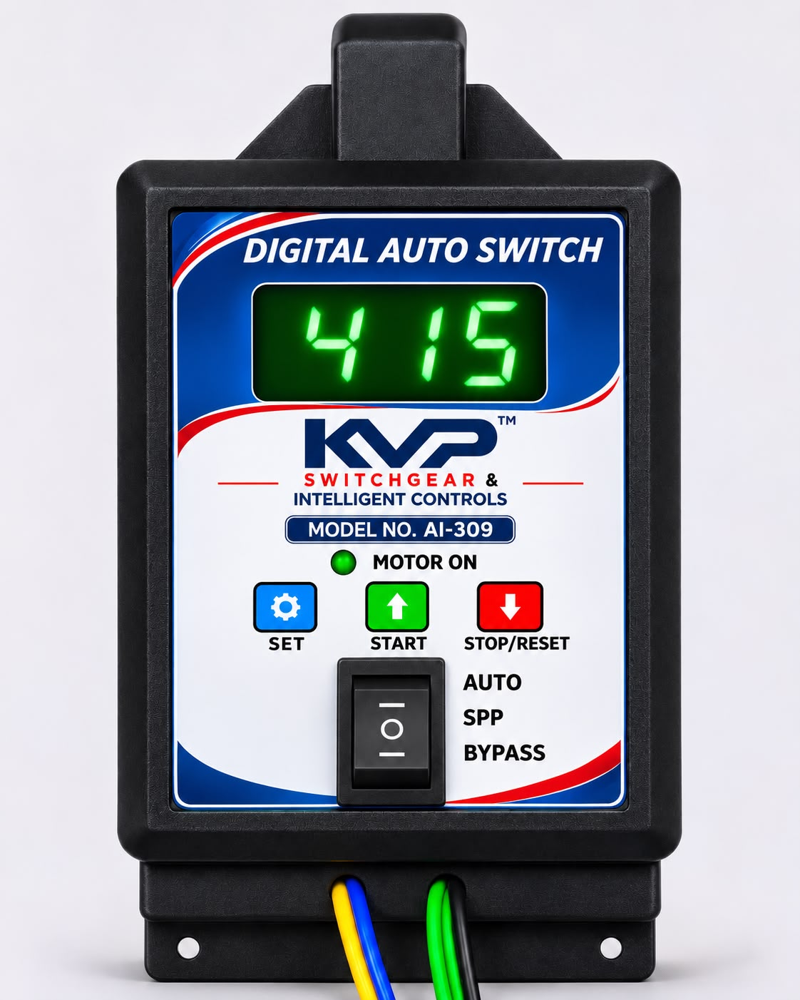

Digital Auto Switch
The AI-309 combines a 415 V digital meter with built-in C.T., automatic switching and a cyclic timer for motor protection and control.
Overview
The AI-309 is a digital auto switch for motors in the 2–60 A range. It displays 415 V phase-to-phase voltage and automatically restarts the motor after a time delay when power returns.
It provides overload, dry-run, SPP and reverse-phasing protection, with adjustable auto dry-run reset, cyclic timer and AUTO/SPP/BYPASS selection.
Key Features
- 2–60 A range; 415 V digital meter with built-in C.T.
- Automatic restart after power returns (time delay)
- Overload and dry-run protection
- Adjustable auto dry-run reset
- SPP and reverse-phasing protection
- Phase-to-phase voltage indication; cyclic timer
Frequently Asked Questions
The product information lists a 2–60 A range. Confirm your motor current is within that range before installation.
It has a 415 V digital meter with built-in C.T. The product note specifies phase-to-phase voltage indication.
The product note lists overload, dry-run, SPP and reverse-phasing protection. The dry-run auto reset is adjustable.
Yes. The product note says it auto-restarts after a time delay when power returns. It does not specify the delay duration; contact a KVP dealer for setup details.
The product image shows a cyclic timer and AUTO, SPP and BYPASS modes, but does not explain their setup. Contact a KVP dealer before wiring or configuring the unit.